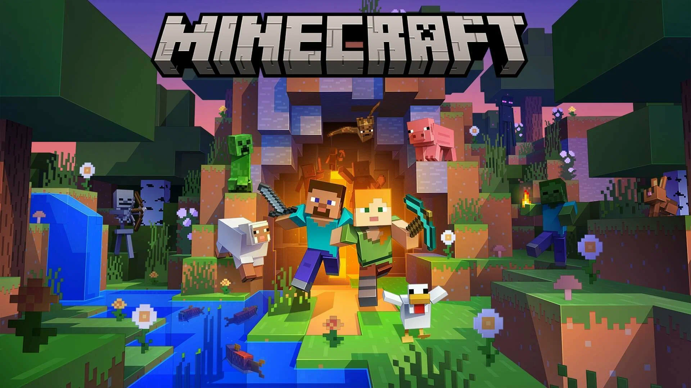
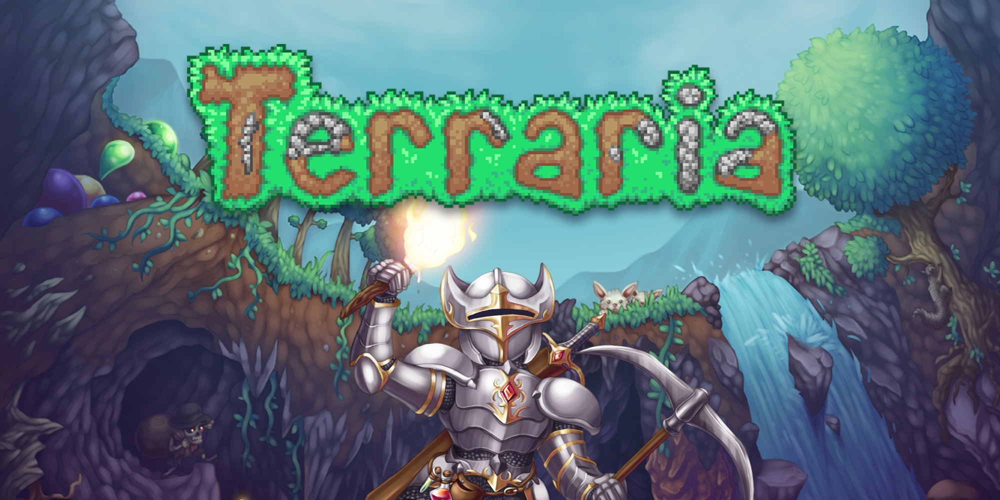
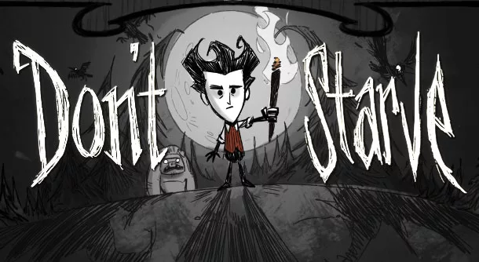
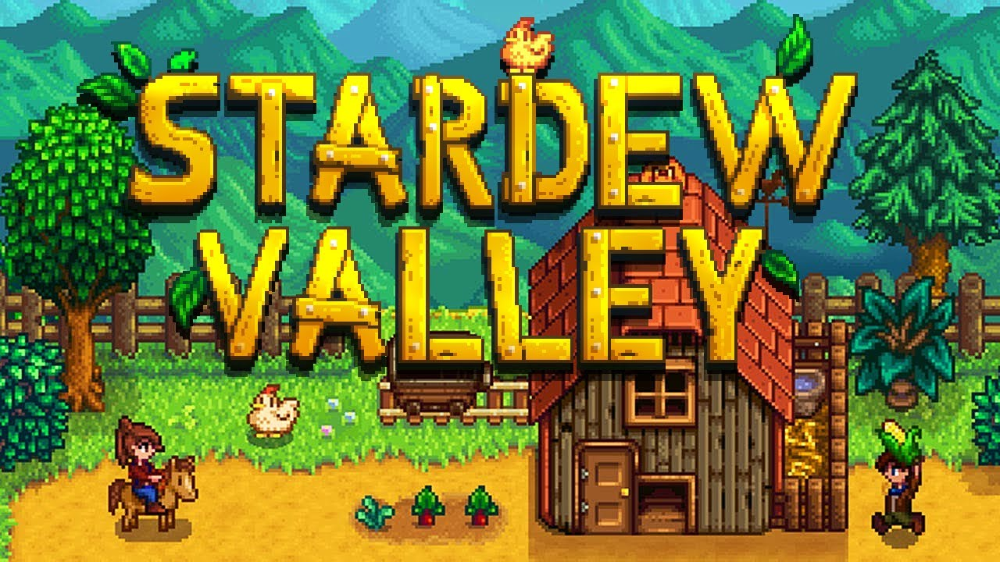
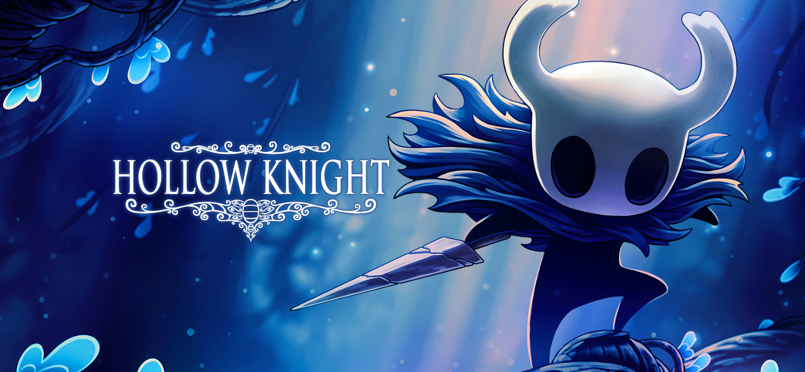
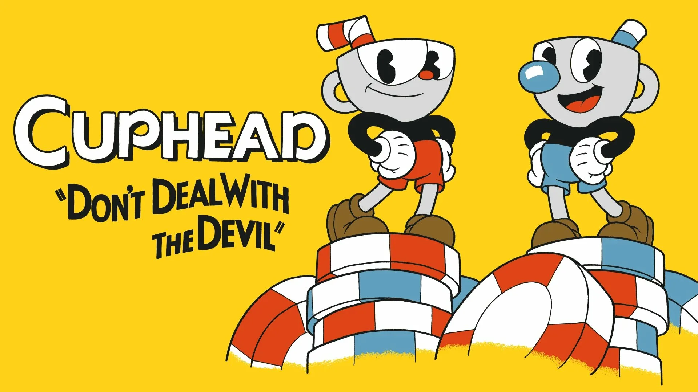
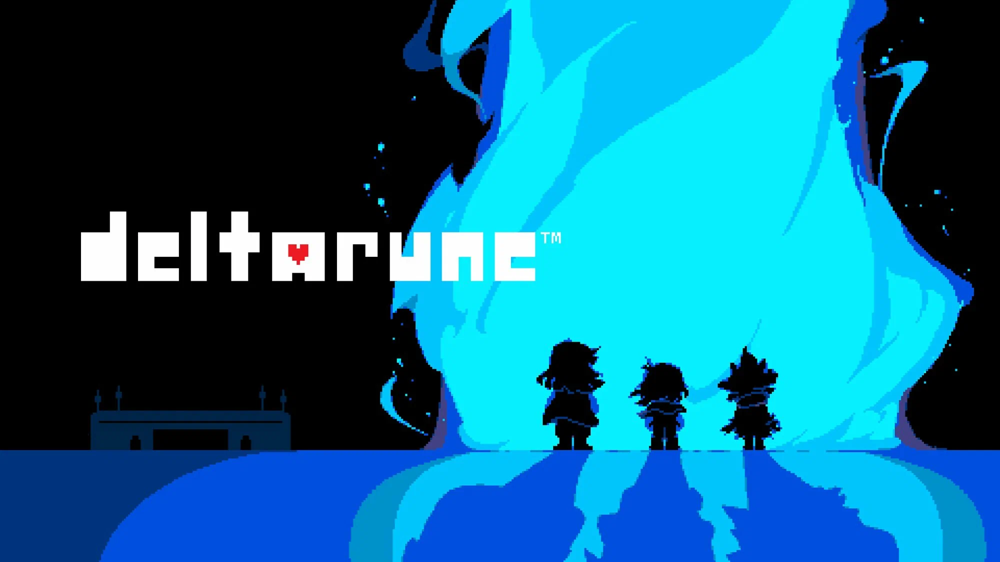
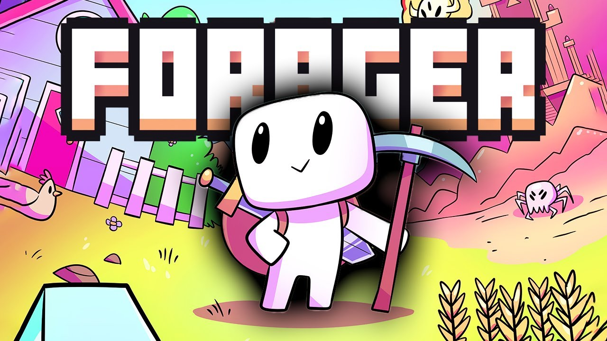
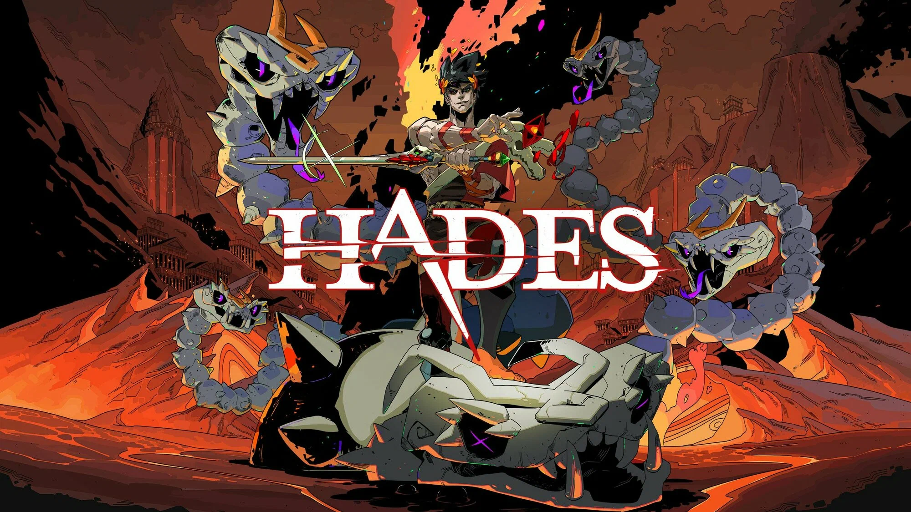
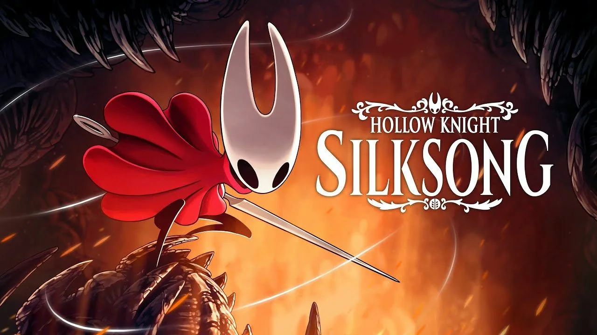

Знаковые инди-игры
sЗдесь собраны проекты, которые оставили след в истории инди-движения.
Minecraft (2009)

Разработчик: Маркус Перссон (Notch), позже Mojang.Начинался как небольшой эксперимент в жанре песочницы. Мир из кубов, который можно свободно разрушать и строить. К 2014 году Microsoft купила Mojang за 2,5 миллиарда долларов. Самая продаваемая игра в истории.
Terraria (2011)

Разработчик: Re-Logic.Двухмерная песочница, где каждый мир генерируется случайно. Игрок начинает с деревянного меча, а заканчивает битвами с гигантскими боссами. Более 20 биомов, тысячи предметов для крафта, система NPC.
The Binding of Isaac (2011)
 Разработчик: Эдмунд Макмиллен.
Разработчик: Эдмунд Макмиллен.
Мрачный рогалик о плачущем мальчике Исааке, который пробирается через случайно сгенерированные подвалы. Сотни предметов комбинируются друг с другом.
Don't Starve (2013)

Разработчик: Klei Entertainment.Мрачный симулятор выживания с уникальным рисованным стилем. Собирайте ресурсы, стройте убежище, сражайтесь с монстрами. Есть кооперативная версия Don't Starve Together.
Undertale (2015)
 Разработчик: Тоби Фокс.
Разработчик: Тоби Фокс.
Ролевая игра, которую почти полностью сделал один человек. С врагами можно не сражаться, а поговорить и пощадить. Несколько концовок и великолепный саундтрек.
Stardew Valley (2016)

Разработчик: Эрик Барон (ConcernedApe).Эрик Барон четыре года в одиночку делал игру мечты. Симулятор фермера с уютным городком, рыбалкой и шахтами.
Hollow Knight (2017)

Разработчик: Team Cherry (3 человека).Метроидвания с нарисованным вручную миром. Заброшенное королевство насекомых, сложные бои и мрачная атмосфера
Cuphead (2017)

Разработчк: Студия Studio MDHR.Визуальный стиль оживших мультфильмов 1930-х. Каждый кадр нарисован вручную, музыка записана живым оркестром. Хардкорные битвы с боссами.
Deltarune (2018)

Разработчик: Тоби Фокс.Духовный наследник Undertale. Первые главы вышли бесплатно. Знакомые персонажи в параллельном мире и фирменный саундтрек.
Forager (2019)

Разработчик: HopFrog.Смесь песочницы, фермерского симулятора и экшен-приключения. Собирайте ресурсы, стройте здания, решайте головоломки и расширяйте мир.
Hades (2020)

Разработчик: Supergiant Games.Экшен-рогалик о сыне Аида, пытающемся сбежать из подземного царства. Каждая смерть — часть сюжета. Множество наград «Игра года».
Hollow Knight: Silksong (2025)

Разработчик: Team Cherry.Продолжение Hollow Knight. Главная героиня — Хорнет. Новое королевство, более 150 врагов. Совсем скоро выйдет первое беслатное DLC: Sea of Sorrow («Море скорби»).